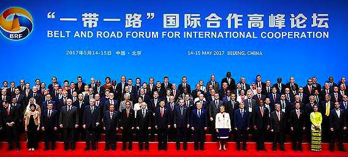
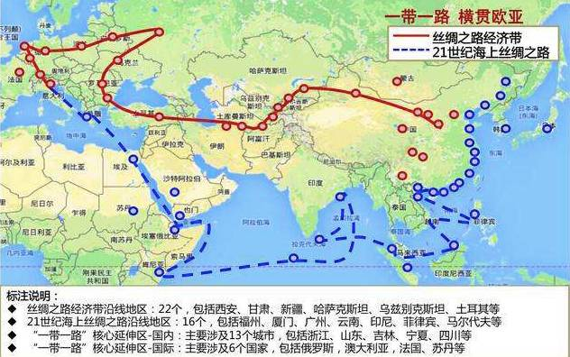

收录于合集
简
李伟建 上海国际问题研究院外交政策研究所研究员
赵婧 上海国际问题研究院外交学专业硕士生
2017年5月14至15日，“一带一路”国际合作高峰论坛在北京举行。本次论坛吸引了来自130多个国家和70多个国际组织的约1500代表参加。作为“一带一路”沿线的重要地区，中东地区除了土耳其总统埃尔多安出席论坛，其他国家也纷纷派出代表团参加了盛会。毋庸讳言，中东地区地缘政治形势复杂，诸多热点问题悬而未解，各国发展不平衡，政治诉求和安全关切重点不一。因此，虽然一些国家对“一带一路”倡议的关注度和热情都在升高，但总体上，中东地区国家对“一带一路”的了解和认知还比较狭隘和粗浅，甚至还存在一些误解。
显然，中东地区对“一带一路”战略的拓展，既有其重要性，更有其复杂性和特殊性。在如今“一带一路”已升级为2.0版，其内涵和空间早已超越初期意义的背景下，中国需要根据中东地区的发展现实，构建起能与本地区国家对政治安全的关切及对和平发展的诉求紧密关联的“一带一路”话语体系。

“一带一路”绕不开中东地区
无论从“一带一路”的沿线空间概念，还是从习近平主席在本次论坛开幕式主旨演讲中提出的“一带一路”新内涵来看，中东地区都是落实“一带一路”战略的重要地区。
从空间概念来说，沙特等海湾国家以及土耳其、伊朗、埃及、以色列等中东地区主要国家从一开始就被涵盖在“一带一路”沿线国家的范畴之中。在正在逐步成型的“六廊六路多国多港”的大格局中，中国与中东国家在“六廊”中的合作在于共同建设“中国- 中亚- 西亚经济走廊”。该经济走廊的出发点在中国西北，通过中亚地区，到达波斯湾、阿拉伯半岛和地中海沿岸。中国要从陆地打通经济走廊，推动中亚、西亚形成“一带一路”基础设施的互联互通。（“六廊六路多国多港”是“一带一路”倡议的合作框架。其中，“六廊”是指新亚欧大陆桥、中蒙俄、中国- 中亚-西亚、中国-中南半岛、中巴和孟中印缅六大国际经济合作走廊。——作者注）

在本次论坛开幕式的主旨演讲中，习近平主席对推动“一带一路”建设提出了五点意见，即：要将“一带一路”建成和平之路、繁荣之路、开放之路、创新之路、文明之路。这赋予了“一带一路”战略以新的内涵。就此而言，习近平主席在演讲中提出的 “和平赤字、发展赤字、治理赤字，是摆在全人类面前的严峻挑战”，无疑切中了中东地区的时弊；而推动“一带一路”建设的五点意见，很大程度上也可视作中国为中东走出和平发展困境提供的思路。
2017年5月末，中国中东问题特使宫小生在访问以色列和巴勒斯坦时表示，在重建丝稠之路方面，中国可以与中东国家有很多合作，这将有利于中东国家的经济发展、社会发展、解决许多中东国家最为关切的失业问题。中国不像某些大国鼓动中东国家去打仗，或者去搞制裁，相反，我们鼓励中东国家朝和平方向发展，朝合作方向发展。他强调：“‘一带一路’的发展将成为中国为解决中东热点问题做出的最重要的贡献之一。”
显然， 中东地区对中国践行大国外交理念及推动共建“一带一路”具有极其重要的意义 。早在2014年6月，习近平主席就在中阿合作论坛第六届部长级会议上提出了“1+2+3”的中阿合作格局，即以能源合作为主轴，以基础设施建设、贸易和投资便利化为两翼，以核能、航天卫星、新能源三大高新领域为突破口。2016年1月，中国政府首次发布的《中国对阿拉伯国家政策文件》，再次明确了中阿战略合作关系的定位和“1+2+3”合作格局，并将共建“一带一路”列为双方首要合作重点。
另一方面， 中东许多国家近年来纷纷提出“向东看”政策，开始重视与中国的关系 。中国提出“一带一路”倡议之后，阿拉伯国家总体反映积极，表达了与中国加强合作的强烈愿望。其中，埃及和阿尔及利亚等北非国家以及科威特等海湾国家进一步提出了一些具体的设想和规划。沙特、伊朗、埃及等国都成为亚洲基础设施投资银行（AIIB）创始成员国，埃及内阁还专门成立了中国事务小组。沙特希望将其提出的“2030年愿景”计划与中国的“一带一路”对接。与此同时，阿拉伯国家也希望中国在中东地区发挥更大的作用。
在过去的三年多时间里，中国与中东国家在基础设施、经贸金融、海上发展、生态环保、科技人文等领域达成了内容丰富的合作意向，如中国与土耳其、伊朗、沙特阿拉伯、科威特、卡塔尔等国签署了共建“一带一路”合作备忘录。在此次高峰论坛上，中国与中东国家又达成了许多具体的合作协议，如：中国政府与土耳其政府签署了国际运输及战略对接协定；中国与埃及签署了港口、电力、工业园区等领域基础设施融资合作协议；中国与阿富汗、伊拉克、巴勒斯坦、黎巴嫩和叙利亚等国家政府签署了经贸合作协议；中国国家发展和改革委员会与阿联酋经济部签署了关于加强产能与投资合作的框架协议；中国国务院新闻办公室与以色列外交部、巴勒斯坦外交部签署智库合作促进计划谅解备忘录等等。这些合作协议被认为是中国与中东国家在“一带一路”框架下取得的一系列新的令人瞩目的成果。
中东地区依然存在复杂的地缘政治关系和悬而未解的热点问题
虽然自中东变局以来，地区总体上已出现乱后求治的大趋势，一些国家开始将稳定发展作为优先战略目标，并表现出希望与中国加强合作的强烈愿望，但必须清醒地看到，目前中东地区的总体稳定与安全依然十分脆弱。
比如：有些阿拉伯国家依然处于战争和动荡之中；有些国家虽然老的政治架构已经垮塌，但新的政治体制尚未真正建立起来，各种政治和宗教势力依然在为主导国家发展互相博弈乃至发生冲突；有些国家正在努力加强治理，但尚未找到合适的方法；一些国家希望推动经济快速发展，但缺少必要的资金和有效的手段。经济得不到发展，民生得不到改善，反过来又增添了社会的不满情绪和极端思想。
另一方面，以“伊斯兰国”为代表的极端势力仍在本地区负隅顽抗，恐怖主义威胁在相当长时间内，不仅会在本地区继续存在，而且还会不断向区域外溢出。
值得注意的是，中东变局导致地区大国地缘政治博弈加剧，对地区国家的关系带来很大的负面影响。比如不久前中东地区发生的沙特、巴林、阿联酋、埃及以及利比亚、也门等国与卡塔尔断交事件，背后折射的就是沙特与伊朗两个地区大国之间的地缘政治博弈，以及在本地区觊觎宗教影响力的争斗。许多年以来，这种博弈和争斗一直是影响地区和平发展乃至区域经济一体化的主要因素之一，既消耗了中东国家大量的国力资源，也使它们错失了许多发展机会。这次断交事件也表明，这么多年过去了，中东一些国家依然没有走出内耗的怪圈。
中东国家内部矛盾的激化，显然违背“一带一路”倡议提出的“和平发展”和“共同发展”的理念 。断交风波加深了阿拉伯国家间的裂痕，对中国推进与阿拉伯世界合作共建“一带一路”带来一定的负面影响。此前有不少学者认为，在中东地区最有可能对接 “一带一路”的应该是伊朗和沙特等资源型国家，两国若能摒弃前嫌，合作发展，不仅对两国本身和地区稳定发展有好处，对中国在该地区推进共建“一带一路”也是十分有利。但是从最新的断交风波看，两国依然处于激烈的地缘政治博弈之中。沙特与伊朗继续互怼，一定程度上也增加了中国与这两个地区大国在该地区开展多边合作的难度。
除了中东地区复杂的地缘政治关系和依然脆弱的地区安全形势及突发事件的影响之外， 中东地区国家对“一带一路”的认知也存在一些偏差 。这主要体现在以下几个方面：
其一，不少中东国家对“一带一路”倡议的认知仅仅停留在经济援助层面。中东国家大多经历冲突或战乱，现在乱后求治，希望重振经济，有些国家基础设施非常落后，迫切需要其他国家提供经济上的帮助，而中国提出的“一带一路”倡议在一些国家看来就是提供此经济类援助的平台。笔者在与中东国家学者就相关议题进行交流时，听到的也大多是希望中国增加对中东国家的投资和援助等想法和意见。
其二，一些中东国家学者长期受西方观点影响，将安全与发展问题截然对立起来， 认为中国在大力推进“一带一路”方面，热情很高，动作很多，但是对其他国际政治和热点问题反应较慢，或者兴趣不大。一些学者甚至认为中国只注重能源和经贸关系，不愿为中东安全负责。这反映出不少中东国家还没有真正了解“一带一路”传递的和平与发展的要义。笔者曾询问一些中东国家学者，为何大部分中东国家首脑缺席在北京召开的“一带一路”国际合作高峰论坛，他们大都认为，中东国家领导人可能更关注地区安全问题。
其三， 虽然许多中东国家的学者和政府官员非常认同习近平主席2016年1月在访问中东期间提出的“中东动荡，根源出在发展，出路最终也要靠发展”的看法，但一遇到具体问题，他们依然会受一系列政治、经济和社会实现问题困扰，觉得“一带一路”太遥远，无法将之与解决现实问题有效关联起来。这也反映了中东国家总体上对“一带一路”精神内涵的理解还很不足，或者说，“一带一路”还远未从政治家、精英和学者的认识转变成具体部门乃至整个社会的共识。
中国在中东构建“一带一路”话语势在必行
综上，我们认为，虽然中东对中国推进“一带一路”建设有着无可替代的重要意义，地区国家对共建“一带一路”的热情也不断升高，但应该看到，中东地区也有着不同于其他地区的地缘政治关系上的复杂性和宗教文化上的特殊性。
中东国家与中国长期友好，但对中国的了解尤其是对中国文化及发展理念的理解还很不够。长期来，中国在中东奉行内敛低调、韬光养晦的外交政策，这些政策虽然总体上符合早些年国家的发展现实，但一定程度上也造成了中国中东外交的话语竞争能力不足以及在一些中东问题上话语缺失的问题。中东国家对“一带一路”倡议的认知不足，一定程度上也与中国在中东的话语构建滞后有关。
因此，我们认为， 在如今“一带一路”的内涵和空间不断丰富和超越的背景下，中国需要根据中东地区的发展现实， 尽快构建起将“一带一路”所蕴含和平发展理念与本地区国家对政治安全的关切及对和平发展的诉求紧密关联的话语体系 。
事实上，自中国明确走大国外交之路后，构建与之相协调的中东外交话语便被推上了中国外交的议事日程。2014年6月5日，习近平主席在中阿合作论坛第六届部长级会议开幕式上做题为“弘扬丝路精神，深化中阿合作”的演讲时，用了几乎三分之一的篇幅谈“丝路精神”。具体可概括为四句话，即：促进文明互鉴，尊重道路选择，坚持合作共赢，倡导对话和平。这四句话包含了中国的大国外交新理念，体现了主动塑造与中东国家关系的新思维，也奠定了中国中东外交的话语基础。
2016年1月22日，习近平主席在阿拉伯联盟总部发表演讲时强调，“中东动荡，根源出在发展，出路最终也要靠发展”，“发展是解决中东问题的根本之道”，还提出了“和平、创新、引领、治理、交融”五大理念，以及“促进稳定、创新合作、产能对接、增进友好”四大行动。这是继习近平主席在中阿合作论坛第六届部长级会议上提出中阿合作共建“一带一路”，构建“1+2+3”合作格局的新构想之后，中国最高领导人再一次在世界关注的中东地区发展及治理问题上提出中国的话语及中国的思路和方案。在此次“一带一路”国际合作高峰论坛上，习近平主席提出要把“一带一路”建成和平之路、繁荣之路、开放之路、创新之路、文明之路。这些建议也为中国在中东构建“一带一路”话语指明了方向。
近年来，中国国家领导人在谈及中国与中东国家共建“一带一路”时，都鲜明地阐述了地区治理与共建 “一带一路” 的辩证关系，明确表达了中国在中东推进 “一带一路” 建设的同时要密切关注和充分参与中东地区秩序的改善和治理的愿望，同时清晰地提出了中国的思路和方案。显然，只有地区秩序和国家治理改善了，“一带一路”倡议才能顺利推进。
基于上述背景，我们认为，现阶段 “一带一路” 在中东的话语构建也必须紧密围绕促进地区治理这一主题来展开。要通过各层次尤其是国家机构和智库间集中和密切的沟通交流，争取与中东国家在以下问题上达成共识，即：中东地区政治和安全形势不稳定的根源在于发展不足、治理不善。进而将中东国家对“一带一路”倡议的认知引领到如下高度，即：该倡议并非简单提供物质援助了事，而是要通过发展和治理来改善地区经济和安全环境。
为此，我们提出如下具体建议：
首先， “一带一路”的话语构建应该与中国总体对外战略和总体外交思想和政策相协调 。更准确地说，它应该成为中国走有自身特色的大国外交之路所必须要建立的国际话语体系的一部分。它与先前中国提出的一系列新理念、新思维、新举措是互补和互相促进的关系，而不是另起炉灶或者取而代之。
从这个意义上说，中国的中东外交话语必须紧密围绕以“和平发展、合作共赢” 为核心的中国大国外交话语来构建。“一带一路”应该成为构建中国在中东问题上的国际话语权的组成部分。中东问题很多，当前应聚焦于地区国家共同关注的热点问题、发展和治理问题及共建“一带一路”问题，提出具有引领性和建设性的中国视角、中国思路和中国方案。
其次，治理问题切中了中东地区国家的时弊，中国的治国理政思想和经验对中东国家有着重要的借鉴意义，许多国家对此表现出极大的兴趣和与中国合作的愿望，因此， “治理”理应成为我们构建中东外交话语的“关键词” 。要将“治理”与稳定地区局势、解决中东热点问题等议题上的话语有效关联起来。学界在研究中东问题时，要逐步打破传统思维定势，关于中东的话语要从过去强调“冲突和矛盾”逐步向突出“治理和发展”转换。
其三， 要突出“发展”对稳定地区局势的重要性 。在中东安全议题上，要摆脱长期以来西方将安全与发展问题对立起来的二元思维模式的影响，确立“发展是安全的基础，安全是发展的条件”的辩证阐述两者关系的中国话语。“一带一路”在中东的话语构建，要为以“促进各国发展，实现地区稳定”为重点的中国的中东外交理念和政策奠定扎实的话语基础。
最后， 要将“一带一路”提升到中国提供发展思路的高度，作为中国主动塑造与中东国家关系的一种外交话语 。当前的重点是，培养地区国家对“一带一路”倡议的知晓度，提高“一带一路”倡议在这些国家的认知度，既要逐渐激发地区国家的热情，又要防止其不切实际的过度期待。构建话语的目的之一是同时要培养“共建”意识，防止“一带一路”成为中方单边行动的话语。
文章来源： 澎湃新闻
筛选： 汪乐乐 编辑： 里仝